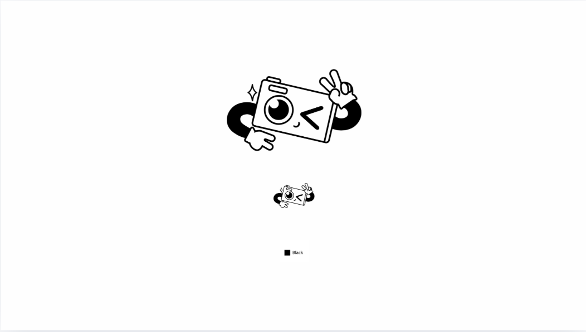
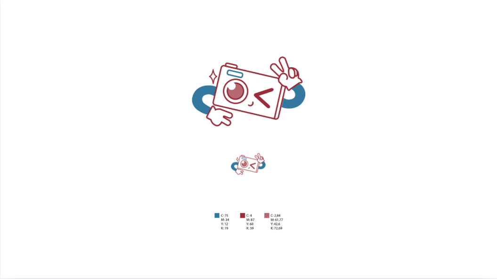
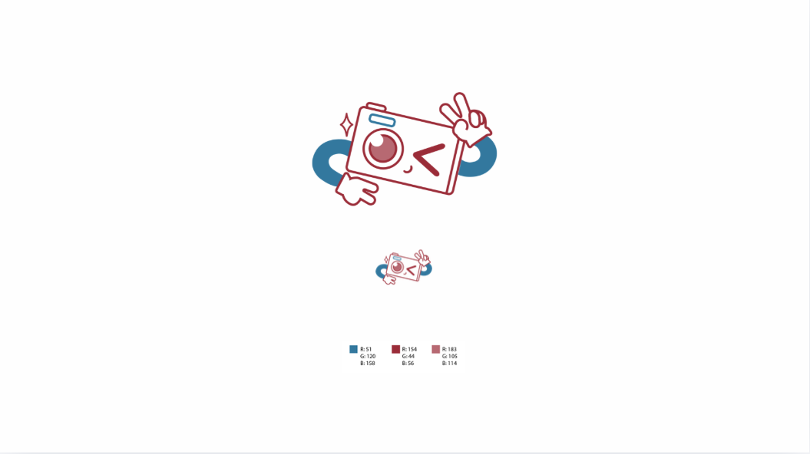
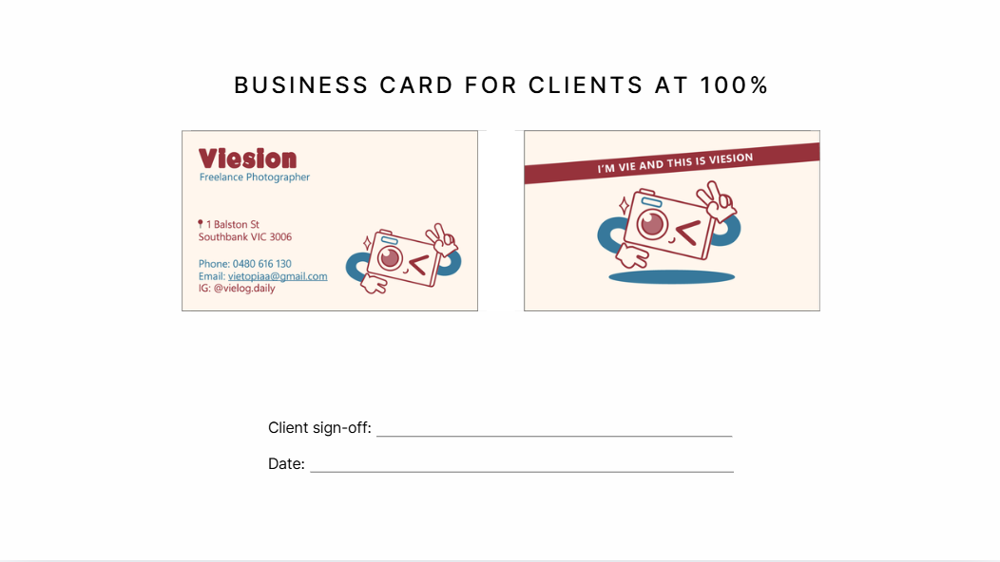
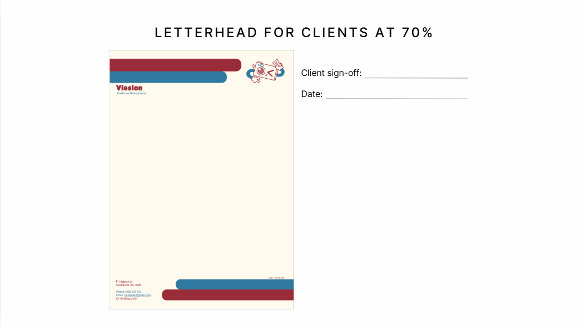

Brand Identity — Photography Service
A complete brand identity system designed for a personal photography service — including logo, business card, and letterhead. Built as a cohesive visual identity with consistent typography, colour palette, and graphic language across all touchpoints.
Concept & Rationale
Concept
The identity chosen is Capture — a concept rooted in something deeply personal. Growing up, there were few photographs of my childhood, few images of my parents when they were young, and little to look back on. That absence became the reason photography became more than a hobby. Capture is not simply about taking pictures — it is about preserving emotions, freezing moments in time, and keeping memories alive. I am always the one recording at every group hangout, the unofficial photographer among my friends, the person who makes sure nothing is forgotten. This logo is a visual expression of that role and that value.
Design
The logo was hand-drawn first, then traced and refined digitally in Adobe Illustrator using a line-based illustration style. The logo itself is a simplified camera rendered as a mascot character. The lens becomes a face: one eye open, one eye winking, and a small smiling mouth, giving the camera genuine warmth and personality. Two hands extend from either side making peace signs — one pointing up, one pointing down — referencing the instinctive pose people make when a photo is taken. A small spark beside the camera references the flash at the moment of capture. The colour palette uses blue and two shades of red — a deliberately contrasting combination that reflects the energy and boldness of the concept.
Composition
The composition is symmetrical and horizontally balanced, giving the logo stability and allowing the two hands to read clearly on either side. The placement of the hands echoes the shape of an infinity symbol, communicating that the memories captured will last forever.
Conclusion
Three logos were developed across three identity topics: Capture, Spiritual, and Rebellion. Capture was chosen because it told a story that was specific and meaningful, with a mascot quality that felt ownable and expressive. It does not simply represent photography as a technical skill — it represents photography as an act of care, preservation, and connection.
Logo Design

Black & White
CMYK
RGBStationery

Business Card
Letterhead